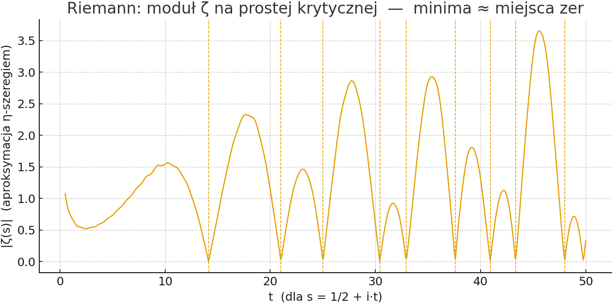

1) Co to jest Λ (Lambda)?
Niech ξ(s) to „upiększona” funkcja Riemanna zeta, spełniająca równanie funkcjonalne. Wyobraź sobie rodzinę funkcji H_t, powstającą z ξ przez coś w rodzaju „odwróconego rozmywania ciepłem” (technicznie: przepływ równaniem ciepła w parametrze t).
- Dla dużych
t wszystkie zera H_t są rzeczywiste.
- Gdy cofamy „rozmywanie” (zmniejszamy
t), w pewnym momencie mogą pojawić się zera nierzeczywiste.
Stała Λ to najmniejsze t, od którego w dół zaczynają się kłopoty (pojawiają się zera poza osią rzeczywistą). I teraz kluczowy fakt:
Hipoteza Riemanna ⇔ Λ ≤ 0. (A wiemy z wyników współczesnych, że Λ ≥ 0.)
Czyli: jeśli udałoby się pokazać, że Λ jest dokładnie równe zeru, mielibyśmy RH. Jeżeli okazałoby się, że Λ > 0 — RH upada.
2) Jak czytać ten wykres?
Patrzymy na wartość |ζ(1/2 + i·t)| — moduł ζ na tzw. prostej krytycznej. Tam, gdzie wykres schodzi do zera, mamy zero funkcji ζ. Pionowe przerywane linie to znane przybliżone położenia pierwszych zer.

Uwaga: używamy „η‑szeregu” do szybkiej aproksymacji — wystarczającej do nauki i intuicji, ale nie do precyzyjnych dowodów.